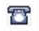

This topic will explain various PartASIST concepts. You'll also see exhibits of various types of information that are available within PartsASIST.
Genuine Catalog
As you work through this catalog, you may find a component or part that you want to purchase. Click on a diagram to view the detail page for that part (similar to the figure below).
Diagram Viewpoint
When viewing the part detail page, notice the small orientation diagram. This icon shows were the part can be found in relation to the chassis.

Diagram Zoom
Use the zoom slider to increase the magnification. Click-and-hold on the diagram and then move the mouse around to move the picture accordingly. See the figure below.
Optionally, you can click the small button with a screen icon to fill the entire browser window with the diagram. Click that button again to return to the previous view.

Change to vertical viewing arrangement
Click the small stack / hamburger icon in the upper-right corne (see reference 1 in the figure below) to increase the size of the diagram and position the parts list below.
Click the small vertical stack icon to return to the previous view (see reference 2 in the figure below).

Part List
There are several columns in the parts list, as seen in this figure.
These columns include this information:
•The value in the # column should correspond to the number in the diagram.
•Part No contains the manufacturer part number. Click on the link to view the details page for that individual part.
Dealer stock number: A black part number may appear below the manufacturer part number. This number is the dealer stock number identifier. |
•Qty is the quantity–how many of each part is necessary to satisfy the specification for the component.
•There is also a short Description of each part.
•Stock displays an indicator for the stocking status of each part.
•Price contains the price amounts, some of which may have an asterisk to indicate that this is a suggested retail price.
Stock indicators
The icons in the Stock column indicate that inventory status of the part. Hover over icon to view the stocking status.

Inventory status icons appear on all Parts Detail pages to indicate the availability of a specific part. The table below provides explanations for all of these.
|
In stock |
Indicates that the part is stocked at the dealer. |
Available |
Indicates that the part is currently not in stock at the dealer, but can be ordered. |
|
|
Replaced |
Indicates that the part has been superseded to a new part number. By adding this part to the cart it will show the superseded part number, price and availability. |
No longer produced (obsolete) |
Indicates that this part is has become obsolete, or that it is not to be sold. |
|
Exchange in stock |
Indicates that this is a remanufactured part that is in stock at the dealer. |
|
Exchange available |
Indicates that this is a remanufactured part that is not currently stocked at the dealer, but can be ordered. |
|
Core part |
Indicates that this is a core part number and is not for sale. |
|
 |
On demand (Call your dealer) |
Indicates that you must call your dealer to obtain further information regarding this part. |
Pricing
Many of the part listings will indicate a price, similar to what is seen in the figure. Price values that have no asterisk (*) indicate that part is already in your local dealer system, and this is the price you would pay. Any price with an asterisk (*) indicates the value is the MSRP for that part. If you add a MSRP-priced part to your cart and place the order, the dealer will respond with a price that corresponds to your normal pricing agreement.
Adding items to the cart
You can add parts to the cart in either of two ways:
•To add parts in the list: Check the box in the parts table header to add all items to the cart. Uncheck this box to clear all check boxes.

•Individual parts: To purchase an individual part from the list, check the box only for that part. You can check as many boxes as you like. When you check the box for a part, the number in the diagram will be highlighted.
Click the Add to Cart button to add the checked parts to the cart.
As indicated above, when a part has the Replacement icon  (superseded) adjacent to it, the superseded part number, price, and availability will appear after it has been selected and added to the cart (see the example in the figure below).
(superseded) adjacent to it, the superseded part number, price, and availability will appear after it has been selected and added to the cart (see the example in the figure below).

Parts Detail Page
As you work through all of the catalogs, you'll see part numbers shown in blue links, which indicates that there is a detail page for this part. In this figure, the arrow indicates an example of this.

Click on a part number link to view a page contain detail information for that part. At the top of the page, you will see bread-crumb links, which you can click to return to the previous pages. This identifies the function groups you clicked to get to the parts detail page. See the figure below.
Here's an example of a detail page:
The Parts Detail page contains this information:
•Part No – This is the part that you selected.
•Dealer Part Number – This is the part number that the dealer as the dealer stocks it; it represents the part you would be purchasing.
•VMRS – This is the VMRS (Vehicle Maintenance Reporting Standards) code associated with that part. VMRS codes may not appear on all parts.
•Brand – This is the brand that dealer stocks this part under.
•Weight – The weight of the part.
•Condition – Indicates if this is a new or remanufactured part.
•Stock – Indicates the stock status of this part.
•New Price – This is your price from the dealer.
•Sales Unit – Indicates the quantity of parts associated with that number.
•Quantity – This is where you indicate how many of the part number you want to add to your cart.
From this page, you can add the part to the cart, or go back to the part diagram page.
Explore All Makes Parts Catalog
Parts that are in the Explore All Makes Parts catalog will appear according to the product category you select.
Here is an example of what appears after selecting the Explore All Makes Parts icon:
After choosing a category, you'll see a list of parts available to purchase from your local dealer.
Just below the top Add to Cart button, you will see the parts table header. In addition to the check box for choosing parts to add to the cart, you can also see Part No, Description, Stock Status, Price, dimensions, application and vendor name. Use the horizontal and vertical scroll bars to view all of this information.
As is the case with the Genuine Catalog, many of the part numbers will be shown as a link to the detail page for that part. If any part number has counterpart shown in black font, that part is typically stocked by your local dealer.
When you click on a part number link, you'll see a page similar to the figure below.
On the left side of the page, you'll see a high definition image of the part. Click on any of the optional views to see a larger image of that view. Hover the mouse over an image to zoom in and see details more clearly.
On the right side of the side of the page–in addition to common parts information–you'll also find:
•Supplier – Indicates the supplier of the part to the dealer.
•Manufacturer – Indicates the manufacturer of the part.
Technical Detail and Product Description
On the next section of the parts detail page, you'll find two tabs: Technical Details and Product Description.
The Technical Details tab includes specific detailed information regarding that part:

The Product Description tab will have all of the sales and marketing information for that part
Supplementary and Interchangeable Parts
The last part of the page will display Supplementary and Interchangeable parts (when applicable).
Supplementary Parts are typically used together with the part you have selected to complete the repair.
CANNOT FIND PART WITH supplements
Each part in this list has an arrow next to it. A solid arrow indicates that this part is essential for completing the repair, so it will automatically appear in the cart when you select the part at the top of the screen. A dotted arrow indicates that this is a recommended part to properly complete the repair, however you must explicitly add this part to your cart.
An Interchangeable Part is a replacement of the original part that you chose previously. Typically, an interchangeable part is offered by another vendor (such as Road Choice).
Click on any of the supplementary or interchangeable parts links to see the detail page for that part.
Shop Special Offers, Local and Fleet catalogs
Navigation in the Shop Special Offers, Local Dealer, and Fleet catalogs is similar to Explore All Makes. A Local or Fleet catalog will only be visible if it is available.